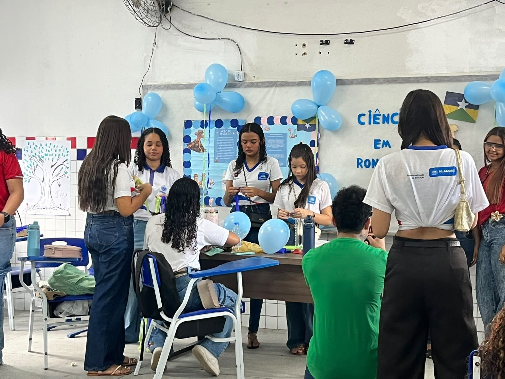

Experimento
Feira de Ciências 2026
1º Matutino A
- Estado: Rondônia
- Prof.: Pedro Paulo
Na Feira de Ciências 2026, a turma representou o estado de Rondônia, apresentou o experimento “Vulcão mágico” e pesquisou plantas medicinais, povos indígenas, biodiversidade e riquezas do estado.

Experimento
O que a turma apresentou
Pesquisa
O que a turma pesquisou sobre Rondônia
Plantas medicinais
São estudadas pela ciência por seus compostos e propriedades terapêuticas. Algumas plantas típicas estudadas são copaíba, andiroba, unha-de-gato e jambu. O açaí também é considerado uma planta com propriedades medicinais.
Podem contribuir para a saúde, mas devem ser usadas de forma correta, pois o preparo e a quantidade variam conforme a planta e a parte utilizada. O chá é uma das formas mais comuns de preparo, mas não é a única.
Povos indígenas
Rondônia possui uma grande diversidade de povos indígenas: são registrados 29 povos no programa Povos Indígenas no Brasil, do Instituto Socioambiental (ISA). O estado possui 43 Terras Indígenas, e parte delas ainda não está regularizada.
Existem povos já contactados e também povos que vivem em isolamento, considerados em situação de risco. Dados da Sesai, citados pelo Cimi/RO, estimavam mais de 15 mil indígenas em Rondônia.
Biologia em Rondônia
Estuda a rica biodiversidade da Amazônia, com pesquisas sobre doenças tropicais, fauna e conservação ambiental, e ajuda a reduzir o desmatamento e preservar plantas e árvores nativas da região. Destacam-se instituições como a UNIR e a Fiocruz Rondônia.
Universidade Federal de Rondônia (UNIR)
É uma das principais universidades do estado. Desenvolve pesquisas sobre doenças usando estudos genéticos, moleculares e epidemiológicos, e também pesquisa câncer, doenças raras e novos medicamentos com inteligência artificial.
Importância de Rondônia para o Brasil
O estado possui predominância da Floresta Amazônica, além de áreas de cerrado e muitos rios. Sua biodiversidade ajuda na regulação do clima, das chuvas e dos recursos hídricos, e tem grande potencial para a bioeconomia e a inovação sustentável.
Povos e cultura
Rondônia tem grande diversidade cultural, formada por povos indígenas, quilombolas, ribeirinhos e imigrantes. Um exemplo são os Paiter Suruí, que vivem na Terra Indígena Sete de Setembro, entre Rondônia e Mato Grosso.
Animais típicos
Mico-de-Rondônia (espécie endêmica da região), onça-pintada, boto-cor-de-rosa, paca, urubu-rei e sucuri. O jacamim-de-costas-verdes é citado como animal símbolo do estado.
Riqueza mineral
A principal riqueza mineral é a cassiterita, minério usado para produzir estanho, utilizado em soldas, latas de alimentos, vidros e componentes eletrônicos. O estado também possui outros minerais metálicos e pedras preciosas.
Curiosidades
O Lago do Cuniã é conhecido pela grande quantidade de jacarés, estimada em até 50 mil indivíduos. O estado também guarda fósseis de animais gigantes da megafauna pré-histórica, como preguiças e tatus enormes.
Cientistas
Quem a turma pesquisou
Pesquisadora citada pela turma no texto sobre plantas medicinais de Rondônia.
Botânica
Osvanda Silva de Moura
UNIR
Doutora em Botânica e professora da Universidade Federal de Rondônia (UNIR).
Ler mais
Citada pela turma na pesquisa sobre plantas medicinais: para ela, as plantas têm compostos capazes de produzir efeitos no organismo humano, e o modo de preparo varia de acordo com a parte da planta usada.
Fotos
Fotos do dia
Toque em uma foto para ver em tamanho maior.